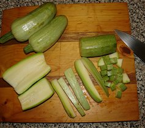
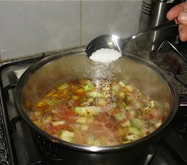
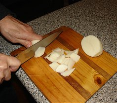
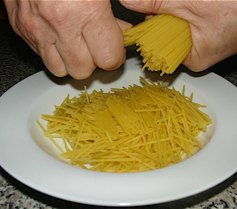
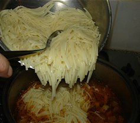

Pasta con zucchini
Marrow pasta
as Mum called it Pasta ca cucuzzeia
This dish uses the subtle flavour of the young marrow to provide the background flavour for this pasta dish. It is a traditional summer “primo piatto” (first course). An important ingredient is a young leaf and flower from the plant but this is next to impossible to get unless you grow them yourself (they are easy to grow in full sun in summer). The leaf needs to have its fibrous veins removed and then chopped finely with the flower and added to the chopped marrow for cooking. The pictures do not show this part of the process as I did not have some to include when I cooked this meal in mid winter.

Method
-

Young marrows are preferable. If the marrow is too fleshy due to its size, then carve out the flesh as I have done with the half marrow on the left of the picture (the skin has the most flavour). Slice and dice the marrow.
-

Remove seed and dice two ripe tomatoes. Cook on a hot bed of olive oil. Mash when soft to form a saucy paste. Add enough water to cover the diced marrow.
-

Add the diced marrow to the saucepan and make sure that the added water more than covers the diced marrow.
Add a dessert spoon of salt and simmer the mixture.
-

Cut the potato into small pieces with a feathered edge and add them to the mix while simmering. The potato pieces should also be covered by the liquid while cooking. The mix will reduce a little while cooking.
-

If using thin spaghetti, break it up for spoon size pieces and cook separately in salted water.
-

When pasta is cooked, drain and add to the mix. Continue cooking at least for a minute or so to allow the flavour to seep into the pasta.
To serve
Serve in a pasta bowl. Usually eaten with a spoon.